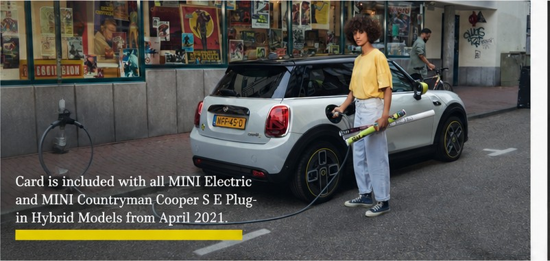
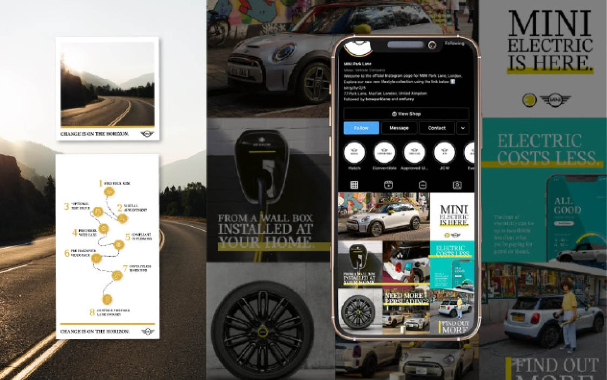
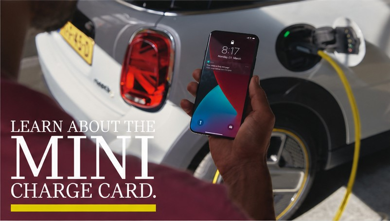
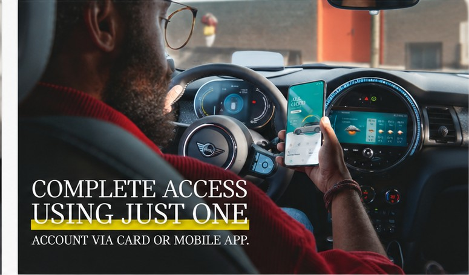
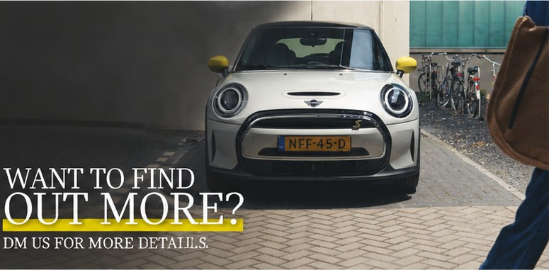

MINI
A multi-touchpoint campaign that answered the real reasons people hesitate on electric.
MINI had a strong electric and plug-in hybrid range and an audience that liked the idea of it. What slowed the decision was doubt, the practical questions people ask themselves before they switch. What it costs to run. Where you would charge it. Whether it fits a real life. Pivitt built a multi-touchpoint campaign that met those questions head on and answered them one at a time, from the first piece of awareness to the moment someone asked to find out more.
The brief
Grow demand for electric, against quiet hesitation.
The barrier was rarely desire. People liked the cars. They hesitated on the practical reality of living with one, and that hesitation was quiet, made up of small unanswered questions rather than a single objection. The campaign had one job: turn that doubt into confidence, in every place a MINI buyer might meet the brand.
The idea
Answer the doubt, one reason at a time.
Rather than argue that electric is better, the campaign answered the specific worries that hold people back. Each touchpoint took one concern and resolved it in MINI’s own voice, warm, plain and a little playful. Cost, addressed. Charging, addressed. Everyday life, shown rather than claimed. “Why go electric” stopped being a pitch and became a set of answers a person could act on.

The centrepiece
The MINI Charge Card, the largest worry answered first.
The biggest question about electric is charging, so the campaign led with the answer. The MINI Charge Card opens up public charging across networks through a single account, by card or through the MINI app, and it comes included with every eligible electric and plug-in hybrid from April 2021. We gave the Charge Card its own run of creative, from the first plain explanation to the practical detail, so the single largest objection was handled in full before it could stall a decision.


Proof
Shown in real streets, included as standard.
Electric had to look like an ordinary part of a real day, so the photography put MINI Electric where people actually live, charging on a city street between one thing and the next. And the line that removed the last hesitation was simple. The Charge Card is included with the car, not an extra to weigh up. The proof did the persuading.
From interest to conversation
A clear way to take the next step.
Awareness only matters if it leads somewhere. Each strand of the campaign ended with an open door, an invitation to ask, built to turn a moment of interest into a direct conversation with the dealership. The same care given to the idea was given to the line that asked for the response.

The outcome
Hesitation met with answers, across every touchpoint.
The campaign gave MINI a single, coherent answer to the question every electric buyer was already asking. One idea, carried across photography, social, the in-car experience and direct response, each piece resolving a real doubt and pointing to the next step. The work made the case for electric in the brand’s own voice, and made the practical reasons to switch difficult to miss.
Where does your brand sit against the business?
Every engagement starts with the Brand Alignment Diagnostic, a fixed first step that scores your brand against the business and shows what to fix first.